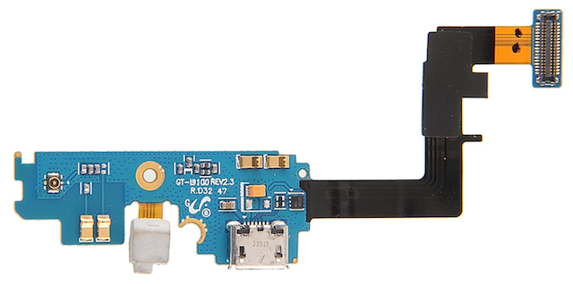
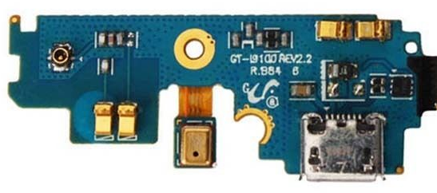
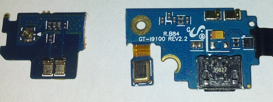

{{% youtube "sBtEz6sWzZY" %}}
How Internet Long Tail Helped Me Fixing My Smartphone
repair
I am just more and more amazed by the opportunities offered by the current Internet connectivity: they call it the long tail.
It strikes me that just few years ago what I have done would have been extreemely difficult or very expensive … or both.
So here is the story of how I was able to fix my Samsung Galaxy S2, the steps I followed and the resources that helped me.
Erratic Malfunctioning
During summer 2014 my S2 started behaving erratically: it was suddenly switching off and back on, charging was giving sings of malfunctioning.
I initially thought this was due to the battery.
Andy, a friend and collegue of mine, gave me one of his spare batteries but the symptoms didn’t disappear. The situation was annoying but, to be frank, not frequent enough to push me to immediate action.
Then in November I decided to investigate whether anybody else had experienced similar problems.
You are not alone
A few searches showed that USB charging port could be the culprit and many youtube videos showed how to repair it
Go for the fun: fix it
Then the next decision point was: do I try to fix it with the risk of destroying the phone or do I just hand it over to a repair shop?
No way to find a repair shop who is close enough and competent enough.
So I decided to give it a go and try to fix it: it is all about taking some screws away and unplug some connectors; no surface mounting soldering or the likes!
Where to buy the parts
So once I decided to repair, where to find the parts? Brussels is not the paradise for electronics hobbists.
EBay to the rescue: one piece can cost as little as 0.30 EUR if bought in lots of thousands (but I need just one!), then I found a single piece at 3.29 CAD (shipping included), still a cheap enough option. The order date is Nov 27, 2014, shipped the day after.
A long wait
Here we are! On 29th Dec 2015 I come home from holidays and it arrived! And the evening after while the kids play with Legos, Daddy repairs (and has fun with) the phone

All is good: USB is charging again, no shortcuts, no erratic shutdowns…Victory!
Mayday, Mayday!
All seemed good, but the radio signal is very, very weak!
So weak that at times I have no gsm/data connection!
Hhuumm, maybe that is due to the fact that the replacement piece I bought was revision 2.3 …

… while the original one was 2.2 …

Back to basics, google search to the rescue: I found an article by Rich O’Neil citing a post on xda-developers from a certain Serathian who simply cut the PCB in two.
Here is what he did:

The left part is responsible for the radio while the right part is the USB.
Ok, few days later I take a scissor and use the radio part from the old piece (rev 2.2) and the USB part from the new (rev 2.3): VICTORY !
Phone is now fixed! (It is 6th Jan 2015.)
Thanks all for sharing (and some huge company to let me find it)!